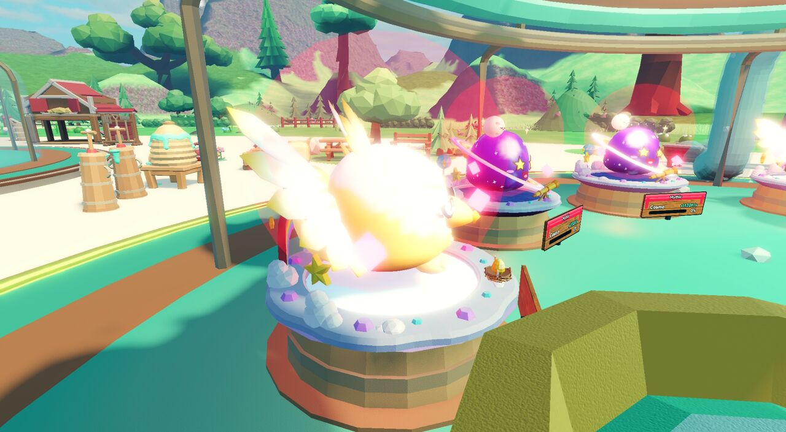
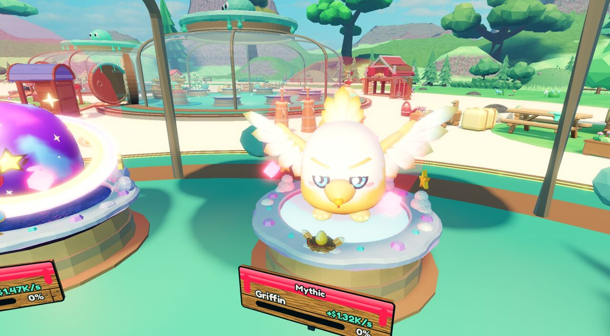
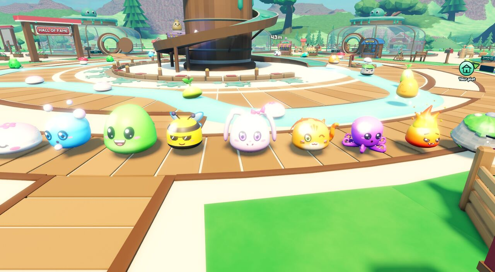
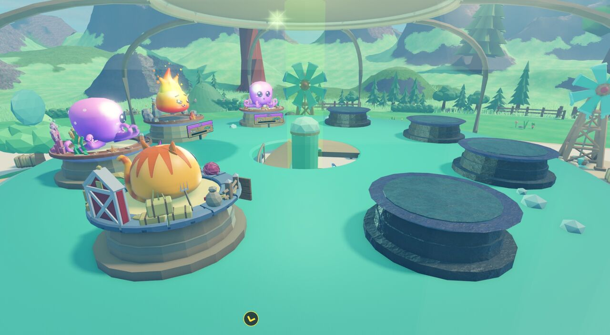
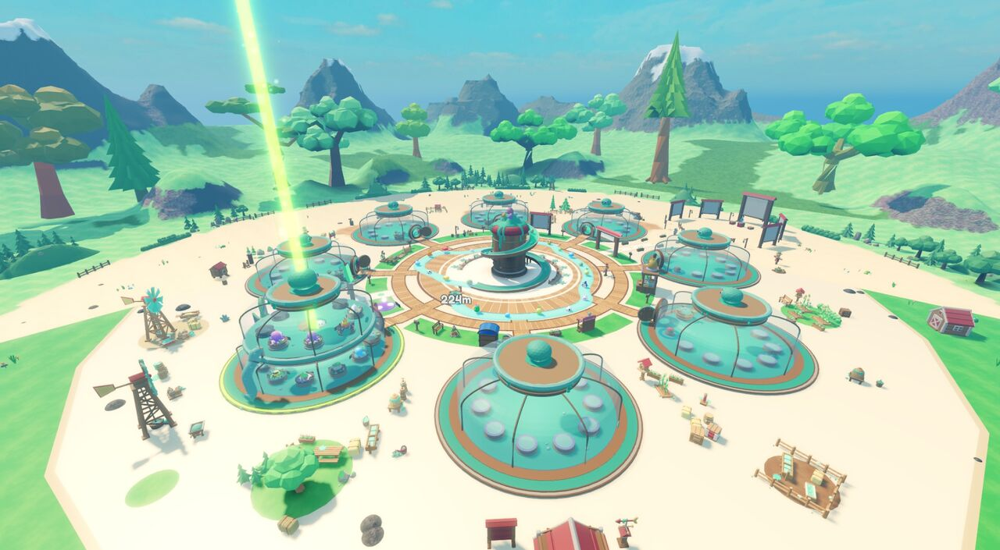
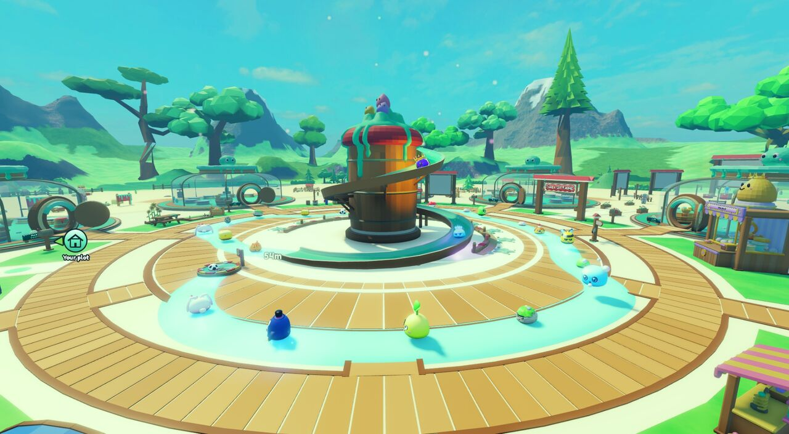
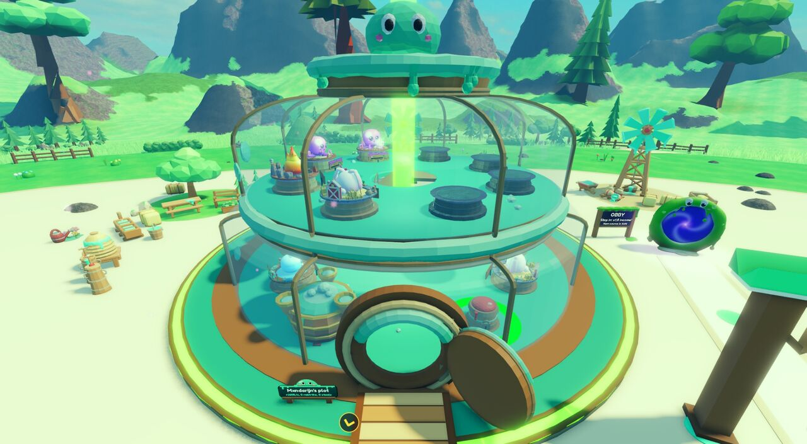
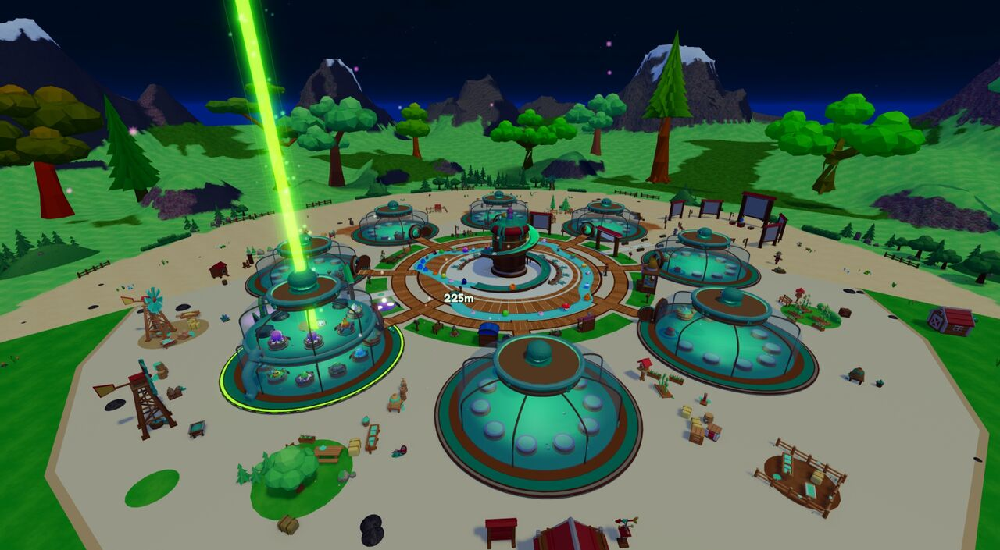

Merijn: "it's mostly slimes etc that are too bright". These are real Studio screenshots at 14:30 in clear weather, with the same slimes at the same spots. Pick one and only those values change.
Why slimes glare: every species mesh has its colours baked in, and the game draws it at full white (Color = 255,255,255, SmoothPlastic). Saturated candy colours at full strength, plus +15% saturation and a strong sun, leave them no room to shade. Darkening the mesh's Color scales all of its baked colours down evenly, so every slime keeps its own look.
Mythic and up: what makes them glare
Merijn's screenshot showed a Mythic Griffin on its pad blown out to white. I rebuilt that in Studio (Mythic Griffins and Cosmos on sky pads) and switched off one thing at a time. Five things sit on a Mythic pad slime:
Aura: a 7-stud Neon ball in the rarity colour around the slime (SlimeLayout, tier ≥ 6). This is the pink bubble.
Floor light: a pink PointLight right under the slime (TopTierFx pedestal, brightness 1.5, range 10). It turns the pad pink.
Orbit gems: three Neon gems circling it (the pink diamonds).
Sparkles and the game-wide bloom, which turns every bright spot into a halo.
Under all that, the Griffin's own colours are already very pale (white wings, light yellow body) at full white.
Fix 1: aura and floor light gone, gems no longer Neon, sparkles and bloom kept. Fix 2: Fix 1 plus the slime colour at 175 (option A below).

What I found: no single effect causes it. The aura and floor light add the pink haze, and removing them clears the Cosmos. The Griffin only becomes readable (wings, face, beak) once its own colour comes down: Fix 1 is still blown out, Fix 2 is not.
Keep a soft glow
Merijn: "they should still glow a bit, just not too much". Every level below keeps the aura, the floor light and the Neon gems, only weaker, and uses the darker slime colour (175). Same Griffin, same camera.
Sparkles and bloom stay as they are in every level.

My pick: Soft 2. The pink gems still shine and a faint rarity glow sits around the slime, so it still reads as Mythic. The face, wings and beak stay clear. The same scaling would go to Secret (and the wild rare-spawn light, which is about 3 times stronger now).
Slimes untouched. Sun 2.2, exposure −0.15, less ambient fill and shine, saturation +5%.
C both, mild
B, plus slime mesh colour 200.
D recommended
B, plus slime mesh colour 175. Still colourful, no longer glaring.
Switches both screenshots below. Keys 0–4 work too. Click back and forth between Now and an option to see the difference.
Lineup on the plaza
Nine species side by side on the boardwalk: mochi, bubbles, gummy, bumble, lop, whiskers, octo, blaze, pebble. The wild slimes behind them wander between shots; compare the front row.

On your base pads
Plot 1 with whiskers, octo, blaze and a second octo on their habitats.

The ground (from the first round)
The first round found a second bright thing: the big flat yard around the bases (Map.Field.FieldSand, 230/211/170) turns almost white. "Darker sand" is the light from slime option B plus that sand at 208/182/136. This can ship with the slime change or stay as it is.
Overview

Plaza

Your base

Night (22:00)

Exact values
Lighting lives in default.project.json (Lighting, Bloom, BaseGrade). The slime tint would be one Config value that SlimeMesh uses instead of white. The sand colour lives in FloorLayout (FieldSand).
Setting
Now
A
B
C
D
Slime mesh Color
255
175
255
200
175
Lighting.Brightness
2.5
2.5
2.2
2.2
2.2
ExposureCompensation
+0.1
+0.1
−0.15
−0.15
−0.15
OutdoorAmbient
125,120,140
125,120,140
100,96,112
100,96,112
100,96,112
EnvironmentSpecularScale
1
1
0.4
0.4
0.4
Bloom.Intensity
0.6
0.6
0.35
0.35
0.35
BaseGrade.Saturation
0.15
0.15
0.05
0.05
0.05
What these shots do not show
Not checked on a phone. All shots are PC captures, scaled down. Phone screens are smaller and often brighter.
Shining and Gold / Diamond / Rainbow slimes were not tested. They get their own colour and material from their shine. A tint would only touch the plain species meshes unless we decide otherwise.
UI icons and the Dex show slime renders, not the 3D meshes, so they stay as bright as now.
Wild Mythic and Secret slimes were not shot. In the wild they get a stronger light (RareSpawn: brightness 4, range 24 for Mythic; 4.5 and 26 for Secret) and more sparkles. That likely needs the same treatment.
Weather was pinned to Clear on the camera client. Rain, snow and starfall add their own grade on top.
The tint was set from a test script on the meshes in a Studio playtest. The real change would go into SlimeMesh, so held, carried and stolen slimes would need a quick check too.
Decided
Merijn picked "Soft 2" ("Build Soft 2", 2026-11-01). Built on this branch:
Slime mesh colour 175 for every species and shine kit (Config.SLIME_MESH_SHADE, applied in SlimeMesh).